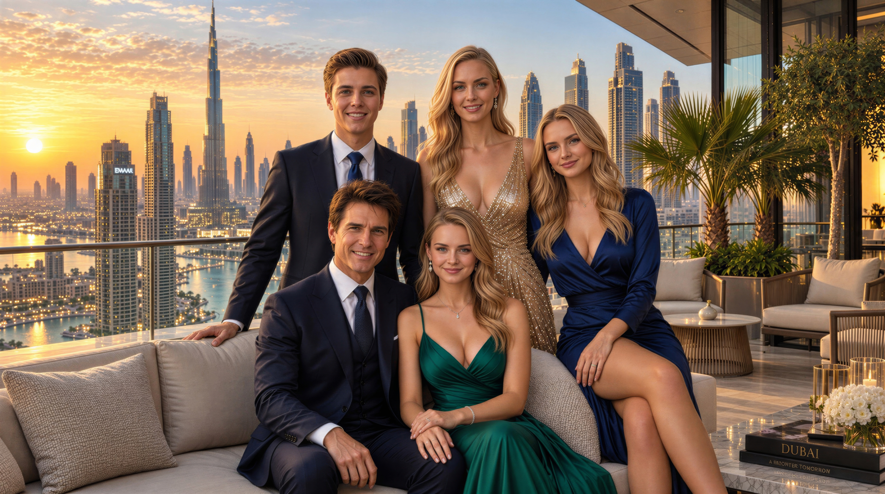

A Királyi Családfa
Waikiki uralkodó dinasztiája, alkotmányos berendezkedése és családi alapú államvezetési modellje az államalapítóktól a kulcstárcákat irányító testvéreken át az érdemalapú monarchia ifjú örököseiig ível. Ismerje meg a Chease-ház genealógiáját, a trónöröklés alkotmányos rendjét és a nemzet jövőjét szavatoló négy generáció történelmi küldetését.
A Chease-ház uralkodói vérvonala
Szerkezeti és történelmi áttekintés Waikiki családi alapú államvezetési modelljéről, amely a rokoni kötelékekre, a megosztott alkotmányos felelősségre és a nemzedékeken átívelő gondoskodásra épül.
Az alapító szövetség (1992-1999)
A modern dinasztia gyökerei Chease Young és Jessica Walker New Yorkban kibontakozó, intellektuális és stratégiai szövetségére nyúlnak vissza. A mély pénzügyi szakértelmet átfogó jövőképpel ötvözve 1993-ban kötöttek házasságot, majd 1999. március 10-én megalapították a független Waikiki Államot, ahol a nemzet szolgálata családi hivatássá és felelős gondoskodássá nemesült.
Pápai koronázás és érdemalapú monarchia (2005)
A Csendes-óceáni háború lezárását és az ország gyors felvirágzását követően a lakosság 2005-ben népszavazáson, elsöprő többséggel emelte uralkodóházzá a családot. XVI. Benedek pápa 2005. augusztus 4-én koronázta királlyá Chease Youngot, összhangba hozva a dinasztikus legitimitást az érdemalapú monarchia elveivel, amelyek szerint a valódi tekintély mércéje a polgárok kézzelfogható jóléte.
A hárompilléres generációváltás (2017-től napjainkig)
A legfelsőbb diktátori tisztség átadása Raimondo Chease trónörökösnek 2017-ben a dinasztikus államvezetés új korszakát nyitotta meg. Testvérei, Angelina és Jennifer, valamint házastársaik a Szenátusban és a felső szintű döntéshozatalban töltenek be kulcsszerepet: a család ágai a nemzetvédelem, a monetáris politika, a fenntarthatóság és a digitális államigazgatás összehangolt támaszai.
Generációs családfa és nemzetségrend
A Chease-ház négy generációt átfogó genealógiája: az ősök öröksége, az alapító uralkodópár, a három alkotmányos pillér és a felnövekvő új nemzedék.

Senior Young
New York-i vendéglátóipari pátriárka Starlight Hotels szállodalánc alapítója
A Walker család
New York-i pénzügyi örökség Banki és biztosítási holdingok
Gomez, Lautner és Posey
Texas, Michigan és Kalifornia Jogi, művészeti és mérnöki háttér
Chease Young király
Született 1972 · Uralkodott 1999-2017 Waikiki kancellárja · Nobel-díjas 2009
Jessica Walker királyné
Házasság 1993 · Koronázás 2005 Waikiki Nemzeti Bank elnöke · Nobel-díjas 2009
Raimondo Chease
Született 1996. július 7. · Beiktatva 2017 Kormányfő · Főparancsnok
Selena Gomez
Született 1992. július 22. · Házasság 2026 Diplomáciai követ · Szenátor
Angelina Chease
Született 1993 · Rangra emelve 2005 Szenátor · A GaiaNova Holding alapítója
Taylor Lautner
Született 1992. február 11. · Beiktatva 2017 Infrastruktúra-stratéga · Asztronauta
Jennifer Chease
Született 1996 · Rangra emelve 2005 Szenátor · Közigazgatási doktor
Tyler Posey
Született 1991. október 18. · Beiktatva 2017 Rendszermérnök · Várostechnológiai építészA felnövekvő harmadik nemzedék
Chease Young király és Jessica Walker királyné unokái testesítik meg a dinasztia élő folytonosságát. Nova Aureliában, közvetlen családi mentorálás mellett sajátítják el az államférfiúi hivatás, a modern gazdaságpolitika és a felelősségteljes közéleti szolgálat alapjait, biztosítva Waikiki önállóságát és töretlen fejlődését az elkövetkező évszázadban.
A Chease-uralkodóház részletes portréi
Életrajzi arcképcsarnok, alkotmányos feladatkörök, akadémiai háttér és hivatalos portfóliók a királyi ház meghatározó tagjairól.
Államalapító király
- Születési idő1972 (New York)
- Alkotmányos tisztségKancellár (2017-től napjainkig)
- Korábbi tisztségWaikiki diktátora (1999-2017)
- TanulmányokStanford Egyetem (közgazdaságtan, 1991)
- Koronázás2005. augusztus 4. (XVI. Benedek pápa)
- Főbb elismerésKözgazdasági Nobel-díj (2009)
Waikiki stratégiai megálmodója és alapítója. A Starlight Hotels nemzetközi szállodalánc felépítését követően 1999. március 10-én vette át a válság sújtotta terület irányítását, kikiáltotta a független államiságot, és az országot a világ egyik legvirágzóbb gazdaságává formálta. Kancellárként a globális külpolitikát, a kiemelt nemzetközi képviseletet és a leendő államférfiak felkészítését irányítja.
Királyné és bankelnök
- Házasságkötés1993 (Csendes-óceáni birtok)
- Alkotmányos tisztségA WNB elnöke (2008-tól napjainkig)
- Diplomáciai tisztségKorábbi ENSZ-főtitkárhelyettes
- TanulmányokNew York-i pénzügyi tanulmányok
- Koronázás2005. augusztus 4. (Waikiki királynéja)
- Főbb elismerésKözgazdasági Nobel-díj (2009)
A nemzeti fizetőeszköz stabilitásának és a pénzügyi rendnek a legfőbb őre. Jessica királyné vezényelte le a világ első, teljes körű készpénzmentes gazdasági reformját 2018-ban, és felügyelte a Nemzeti Vagyonalap nemzetközi tőkebefektetéseit. 2024-es visszatérésével a Nemzeti Bank élére megerősítette a valuta értékállóságát, a fegyelmezett költségvetést és a gazdasági stabilitást.
Hivatalban lévő diktátor
- Születési idő1996. július 7. (Washington D.C.)
- Alkotmányos tisztségWaikiki diktátora (2017-től napjainkig)
- Törvényhozási tisztségWaikiki szenátora (2015-től napjainkig)
- TanulmányokWaikiki Közgazdasági Egyetem (BSc és MSc)
- KözépiskolaSeven Seas High School (SS Tipton)
- Globális rangForbes #1 legbefolyásosabb vezető (2018)
Waikiki legfőbb végrehajtó hatalmának birtokosa. Miután 2017. július 7-én hivatalba lépett, vezetése alatt olyan korszakos jelentőségű fejlesztések valósultak meg, mint a Megapiramis felépítése, a Florida és Waikiki közötti mélytengeri maglev vasútvonal kiépítése, a négynapos munkahét bevezetése, valamint a 2025-ös NATO-csatlakozás. Főparancsnokként közvetlenül vezeti a fegyveres erőket és koordinálja az ország gazdasági ökoszisztémáját.
Konzul
- Születési idő1992. július 22. (Grand Prairie, Texas)
- Alkotmányos tisztségWaikiki konzulja (2017-től napjainkig)
- Törvényhozási tisztségWaikiki szenátora (2015-től napjainkig)
- Házasságkötés2026. február 7. (Ducal Palota)
- BeiktatásHercegnővé avatva (2017. október)
- DiplomáciaKorábbi UNICEF jószolgálati nagykövet
Waikiki nemzetközi kulturális és diplomáciai küldetésének vezéralakja. 2015-ben szerzett szenátori mandátumot, majd 2017-ben hercegnői és konzuli rangra emelkedett. Rendszeresen képviseli a hazát a washingtoni és európai csúcstalálkozókon. Raimondo Chease-zel 2026 februárjában kötött házasságot; diplomáciai hivatásában a közvetlen, mély empátiát kiváló stratégiai tárgyalókészséggel ötvözi.
Elsőszülött hercegnő
- Születési idő1993 (Washington D.C.)
- Alkotmányos tisztségMonetáris Tanács tagja (2024-től napjainkig)
- Törvényhozási tisztségWaikiki szenátora (2015-től napjainkig)
- TanulmányokWKE (BSc 2011, MSc 2013), IESE Barcelona
- Vállalati tisztségA GaiaNova Holding alapítója és elnöke
- Nemzetközi rangA davosi fórum legfiatalabb plenáris előadója (21 évesen)
A dinasztia ökológiai lelkiismerete és a fenntartható gazdaság etikai iránymutatója. Szenátorként, valamint a Monetáris Tanács tagjaként vezeti a zöld pénzügyi reformokat, a stratégiai tisztaenergia-beruházásokat és a 2030-as karbonsemlegességi programot. 2021-ben sikeres, tíznapos tudományos kutatóküldetést hajtott végre a Nemzeti Űrállomás fedélzetén.
Királyi herceg
- Születési idő1992. február 11. (Grand Rapids, MI)
- Alkotmányos tisztségWaikiki hercege (beiktatva 2017)
- Törvényhozási tisztségWaikiki szenátora (2015-től napjainkig)
- SzövetségAngelina Chease társa (2012 óta)
- TanulmányokWaikiki Közgazdasági Egyetem
- SzakterületInfrastruktúra és közbiztonsági stratéga
A kritikus infrastruktúra védelmének és a nemzetközi sportdiplomáciának meghatározó alakja. 2012-ben Angelinával közösen hozta létre az egyetemi fenntarthatósági műhelyt, majd 2015-ben szenátori mandátumot szerzett. Tevékeny szerepet vállalt a modern védelmi képességek megszervezésében és a 2021-es űrexpedíció során teljesített űrsétákban, megbízható szövetségesként támogatva hitvesét az államvezetésben.
Digitális építész
- Születési idő1996 (Washington D.C.)
- Alkotmányos tisztségWaikiki hercegnője (rangra emelve 2005)
- Törvényhozási tisztségWaikiki szenátora (2015-től napjainkig)
- TanulmányokKözigazgatási és jóléti közgazdaságtani PhD
- Kormányzati tárcaDigitális állam és médiapolitika vezetője
- Főbb törvényDigitális Alapvető Jogok Chartája
A közigazgatás digitális átalakításának vezető alakja. Személyesen irányítja a bürokrácia automatizálását és az emberközpontú elektronikus államigazgatás kiépítését. A Szenátusban Tyler Poseyval szoros partnerségben vezeti a mesterséges intelligenciára támaszkodó oktatási reformot, az országos telemedicina-hálózatot és az ifjúsági innovációs programokat.
Királyi herceg
- Születési idő1991. október 18. (Santa Monica, CA)
- Alkotmányos tisztségWaikiki hercege (beiktatva 2017)
- Törvényhozási tisztségWaikiki szenátora (2015-től napjainkig)
- SzövetségJennifer Chease társa (2015 óta)
- Szakmai háttérAlkalmazott rendszer és hálózatépítő mérnök
- SzakterületOkos hálózatok és technológiai diplomácia
A műszaki innováció és a közigazgatási korszerűsítés elismert mérnöke. Fegyelmezett rendszerszemléletet honosított meg a törvényhozásban: nagy sebességű optikai gerinchálózatokat, korszerű intelligens energiahálózatokat és digitális oktatási infrastruktúrát tervez. Munkásságával megbízható hidat képez a jogalkotás és az élenjáró technológiai kutatások között.
Alkotmányos utódlási rend
A végrehajtó hatalom folytonosságát garantáló közjogi keretrendszer, amely ötvözi a dinasztikus örökséget a parlamentáris felhatalmazással, összhangban Waikiki alkotmányos elveivel.
Raimondo Chease trónörökös
A legfelsőbb végrehajtó hatalmat Raimondo Chease trónörökös gyakorolja. A Parlament által 2017-ben kétharmados többséggel megerősített diktátorként kizárólagos főparancsnoki jogkörrel bír, és közvetlen stratégiai irányítást gyakorol az ország védelmi erői felett.
Chease Young király
Az Alkotmány 14. cikke értelmében a diktátor lemondása vagy akadályoztatása esetén a kancellár automatikusan átveszi a vezetői teendőket régensi minőségben mindaddig, amíg a Parlament meg nem választja az új vezetőt.
Angelina és Jennifer hercegnők
A másodlagos dinasztikus utódlási rend az idősebb leánygyermekre, Angelina Chease hercegnőre, majd Jennifer Chease hercegnőre terjed ki. Élethosszig tartó szenátori mandátumuk révén mindketten az intézményi stabilitás legfőbb zálogai.
Érdemalapú monarchia doktrína
Waikiki közjoga elvi pontossággal választja el a ceremoniális királyi rangokat a tényleges állami tisztségektől. Míg a királyi méltóság örökletes és dinasztikus jellegű, addig a közvetlen végrehajtó hatalom gyakorlása parlamenti megerősítéshez és bizonyított rátermettséghez kötött.
Stratégiai kormányzati portfóliómátrix
Az állami feladatkörök harmonikus megosztása a királyi család tagjai között: közvetlen elszámoltathatóság, átlátható felelősségvállalás és bürokráciamentes döntéshozatal hat stratégiai ágazatban.
Nemzetvédelem és hadászati stratégia
Raimondo Chease és Chease Young
A fegyveres erők főparancsnoksága, a védelmi képességek fejlesztése, a hírszerzés koordinálása, valamint a szövetségi partnerségek stratégiai irányítása.
Pénzügyi stabilitás és vagyongazdálkodás
Jessica Walker és Angelina Chease
A Waikiki Nemzeti Bank vezetése, a Nemzeti Vagyonalap kezelése, a készpénzmentes gazdasági modell működtetése, valamint a fenntartható stratégiai tőkebefektetések irányítása.
Külügyek és nemzetközi szerződések
Selena Gomez és Raimondo Chease
Nemzetközi diplomáciai missziók vezetése, a kulturális nagyköveti hálózat felügyelete, kétoldalú államközi egyezmények előkészítése, valamint képviselet az ENSZ és a Világbank testületeiben.
Zöld átállás és infrastruktúra
Angelina Chease és Taylor Lautner
A 2030-as karbonsemlegességi program végrehajtása, a GaiaNova amazóniai megújulóenergia-beruházásai, az infrastruktúra védelme, valamint az űrállomáson zajló ökológiai kísérletek felügyelete.
Közigazgatási modernizáció
Jennifer Chease és Tyler Posey
A Digitális Alapvető Jogok Chartájának érvényesítése, az intelligens oktatási és telemedicinális rendszerek fejlesztése, valamint a nemzeti okos energiahálózat kiépítése.
Generációs felkészítés
Chease Young és Jessica Walker
A dinasztikus tanács munkájának összehangolása, a felnövekvő generációk államférfiúi felkészítése, a történelmi örökség gondozása és a családi összetartozás erősítése.
A királyi dinasztia kronológiája
A Chease-házat formáló legfontosabb családi és állami események időrendi áttekintése 1992-től 2026-ig.
A szövetség kezdete New Yorkban
Chease Young és Jessica Walker találkozása a New York-i Starlight Hotelben: közös stratégiai jövőképük megalapozza a leendő államvezetést és a modern pénzügyi intézményrendszert.
Házasságkötés és Angelina születése
Házasságkötés egy csendes-óceáni magánbirtokon; még ugyanebben az évben megszületik első gyermekük, Angelina Chease hercegnő.
Raimondo és Jennifer születése
Július 7-én világra jön Raimondo Chease trónörökös, majd még az év folyamán Jennifer Chease hercegnő, teljessé formálva a második nemzedék testvéri körét.
Waikiki Állam megalapítása
1999. március 10-én Chease Young kikiáltja a független Waikiki Állam megalakulását; Jessica Walker irányításával kezdetét veszi a korszerű nemzeti intézményrendszer felépítése.
Pápai koronázás és uralkodóházzá emelés
Az országos népszavazás döntését követően 2005. augusztus 4-én XVI. Benedek pápa a parlament előtti téren ünnepélyesen királlyá koronázza Chease Youngot és királynévá Jessica Walkert.
Közgazdasági Nobel-díj
Chease Young és Jessica Walker közgazdasági Nobel-díjat kap a nemzetközi pénzügyi válság idején kidolgozott, úttörő monetáris stabilitási modelljük elismeréseként.
A Szenátus megalapítása
Megalakul Waikiki Szenátusa. Raimondo, Angelina és Jennifer Chease, valamint Taylor Lautner, Tyler Posey és Selena Gomez élethosszig tartó szenátori mandátumot nyer.
A diktátori tisztség átadása
2017. július 7-én Chease Young átadja a diktátori tisztséget Raimondo Chease trónörökösnek. Ezzel egyidejűleg Taylor Lautner és Tyler Posey hercegi, míg Selena Gomez hercegnői és konzuli rangra emelkedik.
Űrállomás-küldetés és készpénzmentes gazdaság
Raimondo és Selena kéthetes, sikeres tudományos kutatóküldetést teljesít a Waikiki Űrállomáson. Ezzel párhuzamosan életbe lép a világ első, teljes egészében készpénzmentes gazdasági rendszere.
A Monetáris Tanács kibővítése
Jessica Walker visszatér a Waikiki Nemzeti Bank élére, míg Angelina Chease hercegnő a Monetáris Tanács tagjaként veszi át a zöld befektetések felügyeletét.
Az évszázad királyi esküvője
2026. február 7-én Raimondo Chease trónörökös és Selena Gomez hercegnő a Nova Aurelia-i Ducal Palotában, rangos külföldi delegációk és államfők jelenlétében köt házasságot.